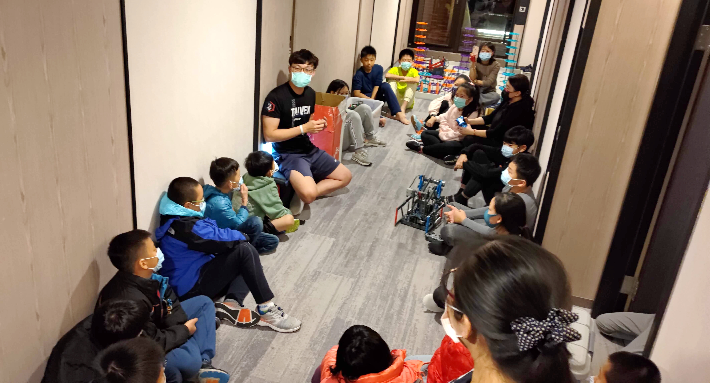
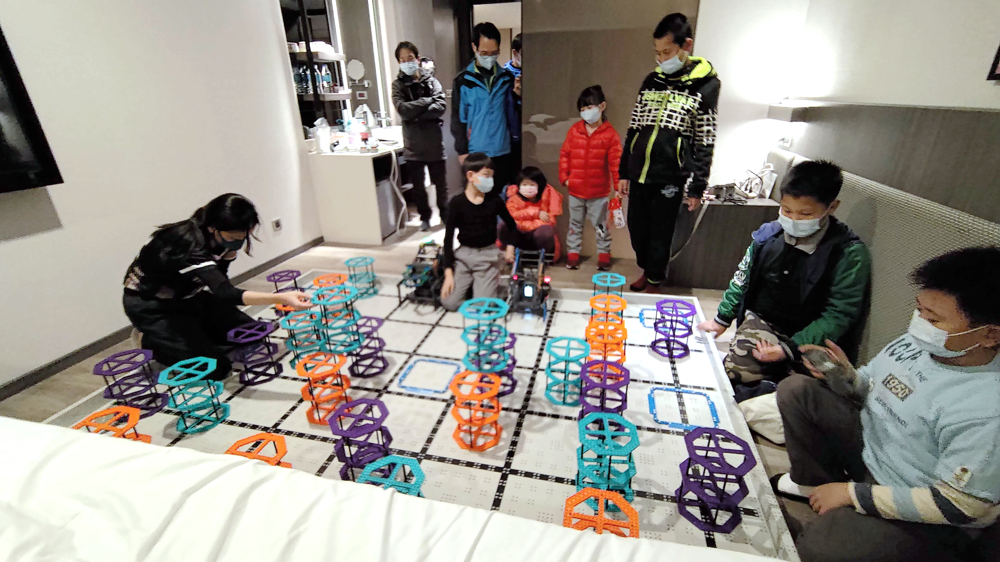
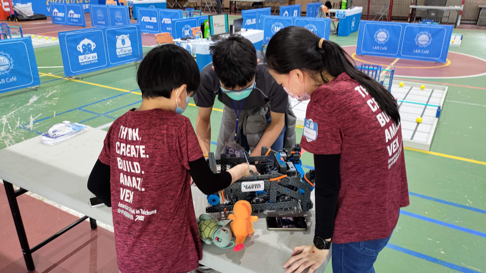
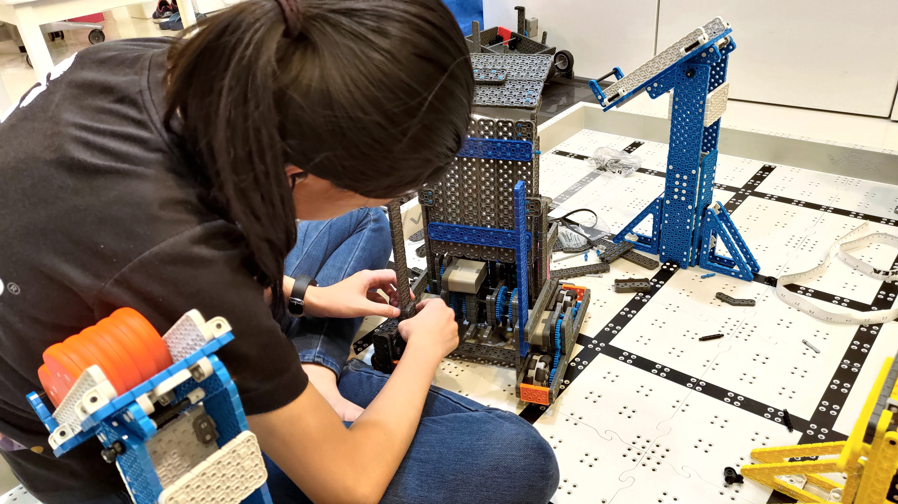
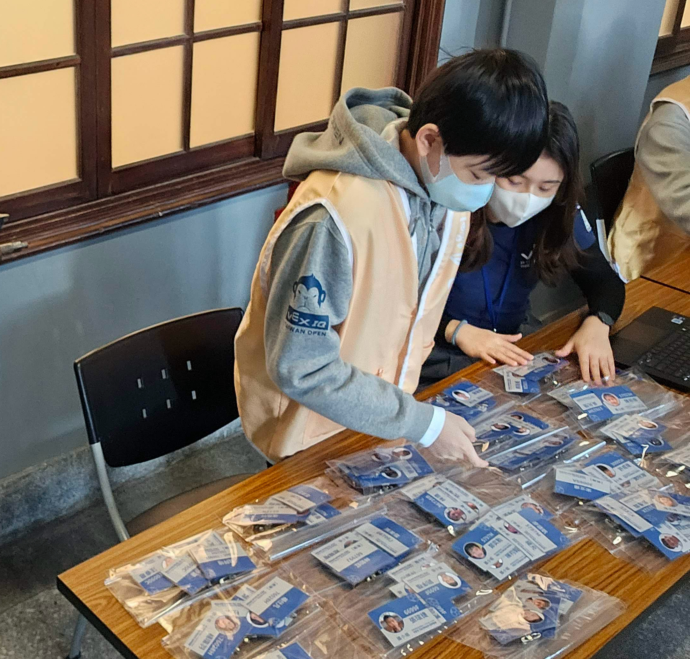

我是誰？講這個主題是否有立場？
我有一個高二的女兒，一個國二的兒子，他們從五年前開始學 VEX，曾經一起組隊，也曾經分開組隊過，之後可能又會一起組隊。
不管是 VEX IQ 或者 VEX V5，國內比賽均有得獎，也多次參加世界賽，除了得獎之外，也打進過最終舞台，所謂的「進 DOME」，在數千位現場觀眾前承受壓力，與全世界高手同場競技。

而且，這五年還經過完整的疫情，非常不容易。不管是比賽或者面談，我們都有實體跟線上的完整經驗。太太跟我支援他們經歷這五年，應該可以說是有點經驗，分享這個主題有點立場。
連續參加這麼多年，有什麼印象深刻的體會嗎？
有。看到孩子的成長，非常明顯。
因為我跟太太的背景都不是工程，所以從小學他們開始學機器人並參與 VEX 競賽時，我們沒辦法直接給予結構或程式建議，只能根據「大人」理解的做事方法跟推理去協助。用線上遊戲的術語說，就是我們沒有能力 carry 他們，只能打 support。

第一年，孩子真的很用心學，但兒子才小學中年級，負責寫技能挑戰賽的自動程式，在家裡都能拿到 70 甚至 100 分，但到了決賽現場，卻因為摩擦力不同，以及場地地板不是平的，有稍微的傾斜角度，跑了三次，機器都滑歪掉，只拿到個位數的成績。
第一次還能承受挫折，再接再厲。第二次爆掉就非常焦慮，自己去會場旁的操場走了好幾圈調整情緒。第三次一樣爆掉，用完所有的機會後，就哭著回來了。
作父母的當然就是給他們安慰跟支持。「你很棒，你很努力了，沒有人怪你。」
即使當下我們也很難過，但隔年就好像忽然升了一個等級！孩子的大腦發育得更好，對機器人的理解，對比賽的理解，對場地狀態的理解更多了，現在的他們，會把這些都考慮進去。
回頭看，也才知道，當年就是有那個時候能理解的極限，必須去體會跟感受，之後才能變強。如果一切很順利，如果我們很懂而直接處理好，他們就少了這樣的學習機會。那次的眼淚，讓孩子打從內心想要變強，之後也真的變強了。這樣的經驗，最是難得。

那麼小的孩子，做機器不就都是模仿 YouTube 上的高手嗎？
這句話「部分」正確。對的部分是，因為做機器沒有那麼容易，所以從模仿開始是很好的起步。就像新進的車廠，一定也是先學習成熟車廠的作法。新進的軟體商，也會參考既有主流軟體的作法。iPhone 學 Android，Android 也學 iPhone。把所有同學的手機放桌上，其實每支都大同小異：長方形黑色的薄磚頭，前後都有鏡頭。
孩子也有骨氣的，他們剛開始看網路上的影片，需要放大、定格、照著做。但下一次這些就是他的知識跟養分，即使一樣必須參考其他隊伍的機器，也開始會自己做些關鍵修改。賽季一開始，甚至會嘗試從零開始自己打造，然後去感受自己的設計跟高手設計的差異，繼續精進。
嬰兒學走路也是這樣，沒有人天生就會走。先爬，然後坐上學步車，然後扶牆壁，然後大人牽著走，接著就能自己走了！
這也是為什麼，最好能給孩子幾年的時間，得獎很棒，但家長若關注孩子的投入、努力、進步的話，孩子就能學得更好、走得更遠。

VEX 系統的機器人競賽，有什麼特別的地方？
我們的孩子比過四種不同的機器人競賽，各有特色。VEX 最特別的是，賽制設計很有意思。
國中國小的 VEX IQ，就有競合關係（coopetition），也就是同時有競爭與合作。在比賽一開始，會亂數抽籤，兩兩形成聯隊，在 1 分鐘內，要彼此合作取得最高分，結束後這個分數就是兩隊共有的分數。假設 6699B 跟 12345A 一起拿到 160，那這場 6699B 跟 12345A 就都是 160 分。
所以，這賽制鼓勵孩子在比賽間，要跟可能合作的隊伍事先溝通。而且比較強的隊伍，通常會準備好幾套方案，遇到普通的隊伍該如何保底拿分？遇到強的隊伍要怎麼拼最高分？這樣才能在資格賽中，取得優勢，決賽時配到更好的隊伍。

國中高中的 VEX V5 則更像真實人生，資格賽之後的決賽，不是像 VEX IQ 這樣固定第一配第二、第三配第四，而是從第一名開始，依序挑選自己想要合作進決賽的隊伍，而被挑中的，可以接受，也可以拒絕，但如果被挑中的隊伍拒絕，之後就不能再被其他隊伍指定，只能等到自己的順位到的時候，才能挑合作隊伍。
這樣的設計，鼓勵孩子除了自己要打好之外，也要去觀察其他隊伍的機器特性、成員特質，然後自家隊伍名聲也很重要。就像做生意一樣，你要選擇跟怎樣的上下游合作，你的供應商跟通路管理，到底是要挑最好的？還是最互補的？還是最珍惜跟你合作機會的？還是最穩定好溝通可信賴的？
這部分沒有絕對的對錯，只能根據每個賽季的得分規則去優化，孩子們必須根據對機器跟能力的熟悉，去擬定最適合他們自己的策略，然後奮力一搏，看看結果。非常有意思。

結語
以上，是三個作為資深 VEX 隊伍家長的一些分享，希望對各位讀者們有些幫助。祝學習與比賽都順利，孩子們收穫滿滿！